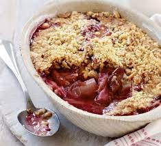

Rhubarb Crumble

Description
Rhubard Crumble is a british favourite, a top choice for dessert after Sunday Dinner. Small variations can be included, but you can't beat the classic.
Made of a stewed rhubarb filling and topped with sugary crumbly... crumble! You can add ice cream or custard as you like. Smashing!
Ingredients
For the filling
- 500g rhubarb chopping into chunks
- 100g golden caster sugar
For the crumble topping
- 140g self-raising flour
- 85g butter, chilled
- 50g light brown muscovado sugar
Recipe
- Tip rhubard chunks into saucepan with the golden caster sugar
- Cover and simmer on very low heat for around 15 minutes.
- When soft, but not falling apart, pour mixture into a baking dish
- Mix flour and chilled butter together with your fingers to create the 'crumble' topping
- Mix in muscovado suger, again using hands
- Scatter topping over rhubard
- Bake for 30 mins or until golden brown on top
- Serve with custard or ice-cream, as peferred